End-to-end analytics on 1,470 employee records to uncover the drivers behind employee attrition — from raw data to an interactive 3-page Power BI dashboard.
Employee attrition is one of the most costly problems for any organization — replacing a single employee can cost 50–200% of their annual salary when you factor in recruitment, onboarding, and lost productivity.
The challenge is that most HR teams don't know why people leave until it's too late. This project uses IBM's HR dataset to identify the exact patterns and risk factors — so HR teams can act before employees decide to leave.
Loaded the raw IBM HR CSV into Python. Dropped 4 constant columns with no analytical value. Engineered 5 new features: TenureBand, AgeBand, SalaryBand, SatisfactionScore (avg of 4 metrics), and binary encodings for Attrition and OverTime.
Generated 9 publication-ready charts covering attrition by department, job role, tenure, salary, overtime, age distribution, satisfaction score, and a full correlation heatmap. Each chart designed to answer a specific business question.
Imported the cleaned dataset into SQLite and wrote 11 queries — from overview aggregations to cross-dimensional analysis (department × overtime) and a high-risk employee identification query filtering for active employees with overtime + low satisfaction + early tenure.
Built a 3-page interactive dashboard in Power BI Desktop — Overview KPIs, Deep Dive analysis, and a Risk Profile page with 4 slicers (Department, Job Role, Overtime, Tenure) that filter all visuals simultaneously. Used DAX measures for accurate % calculations.
Generated using Matplotlib & Seaborn. Each chart answers a specific business question about attrition drivers.
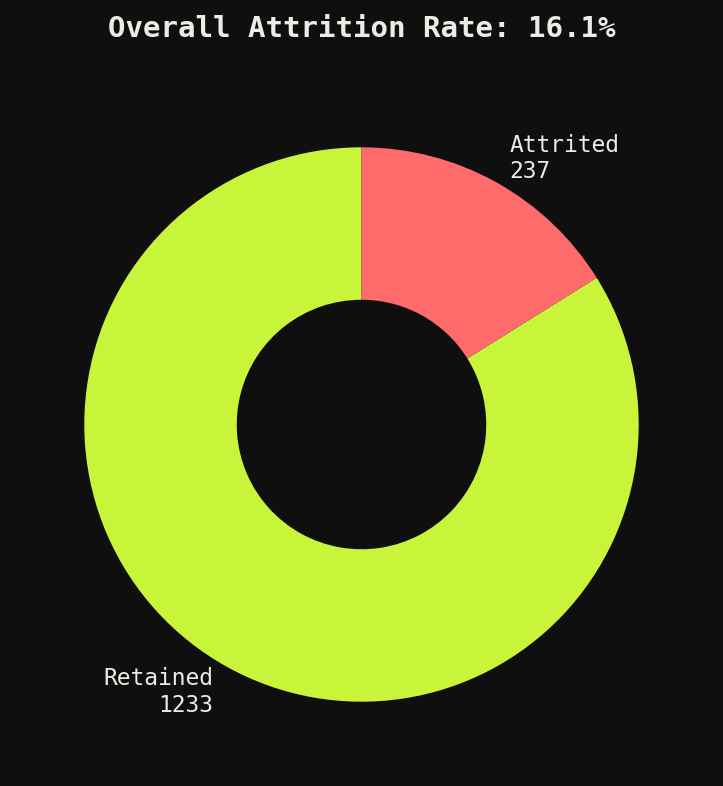
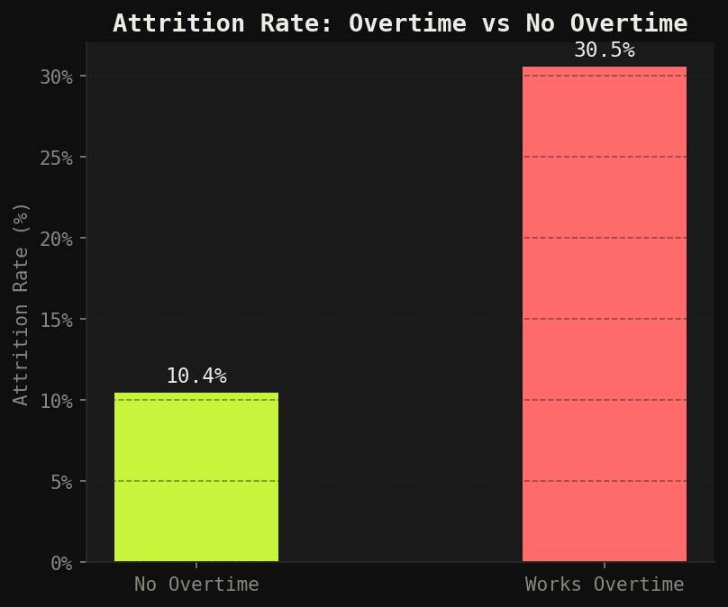
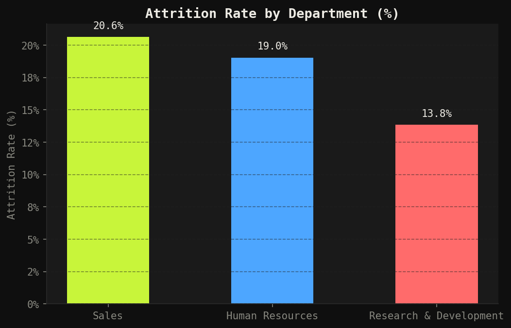
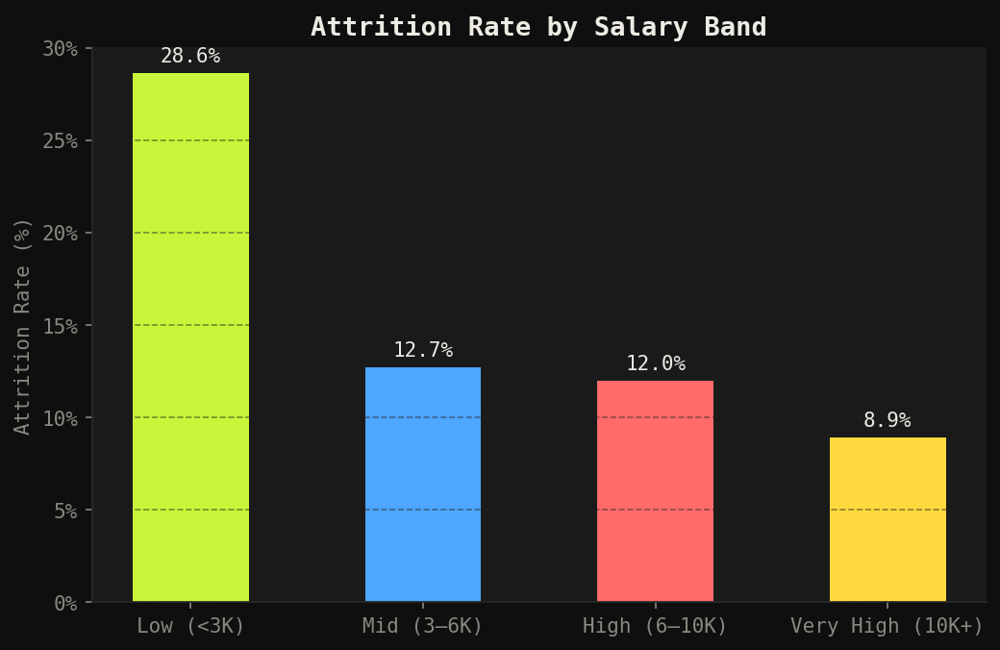
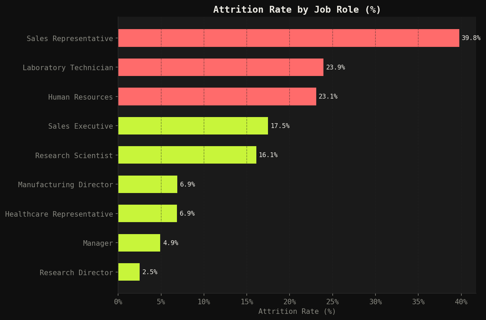
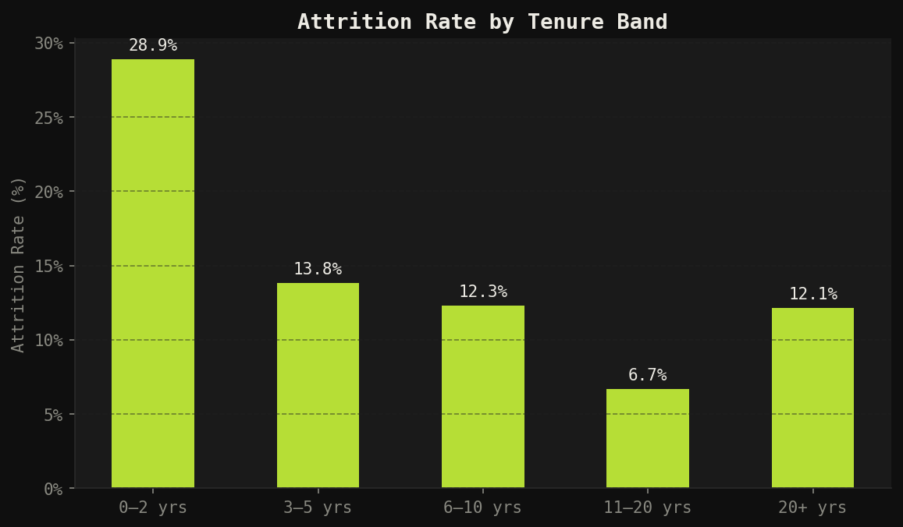
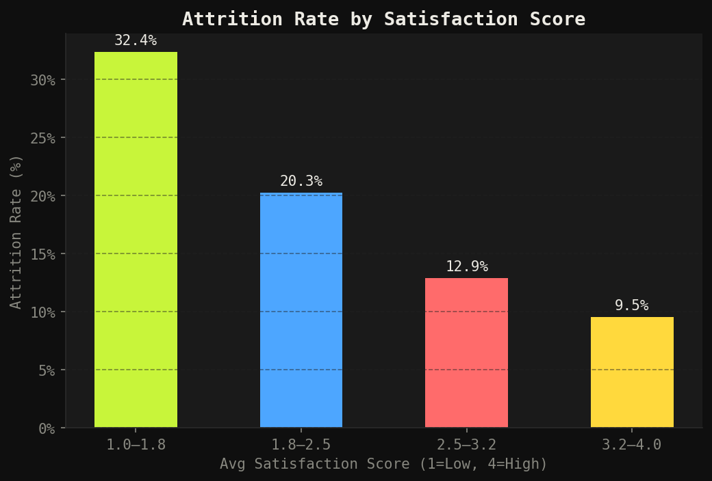
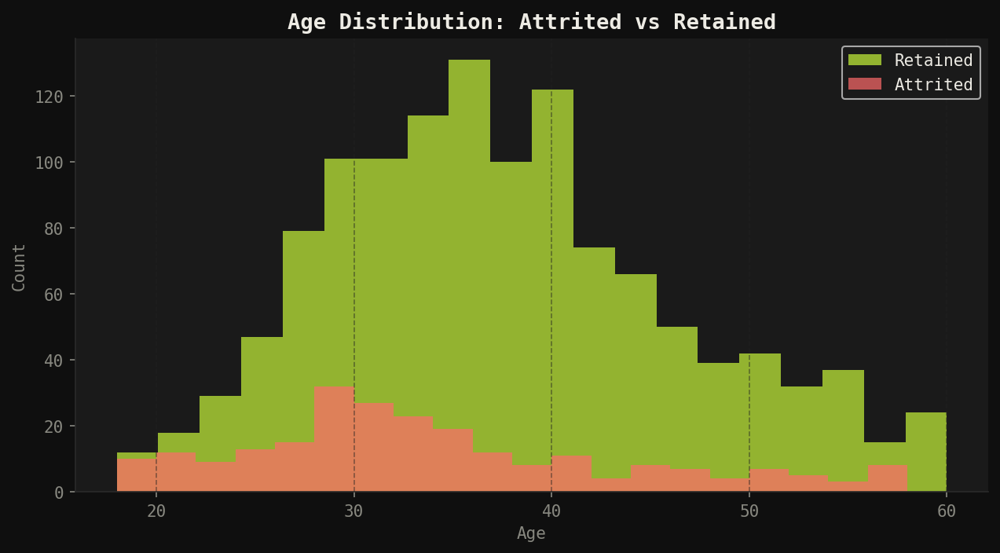
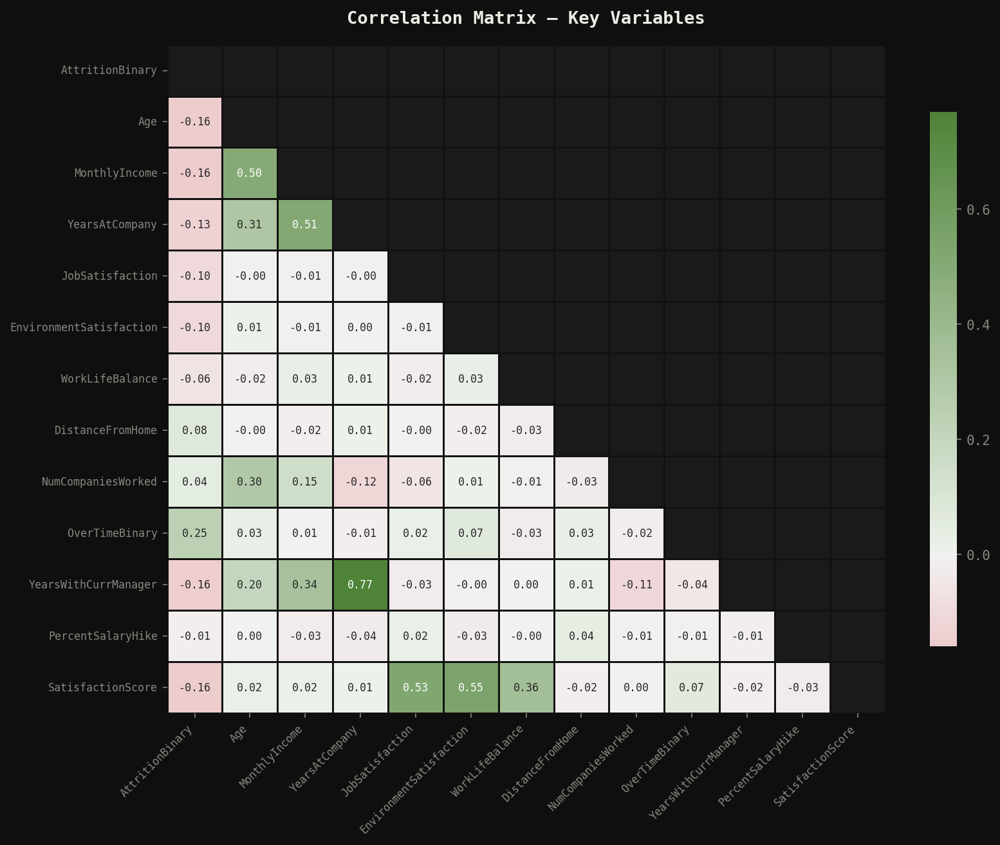
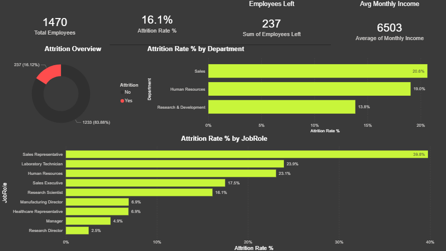
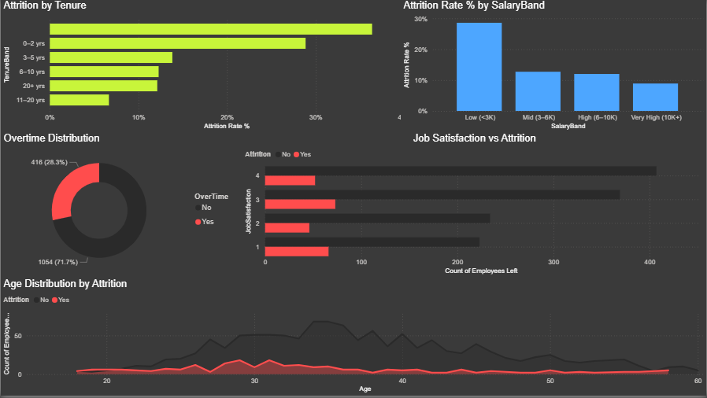
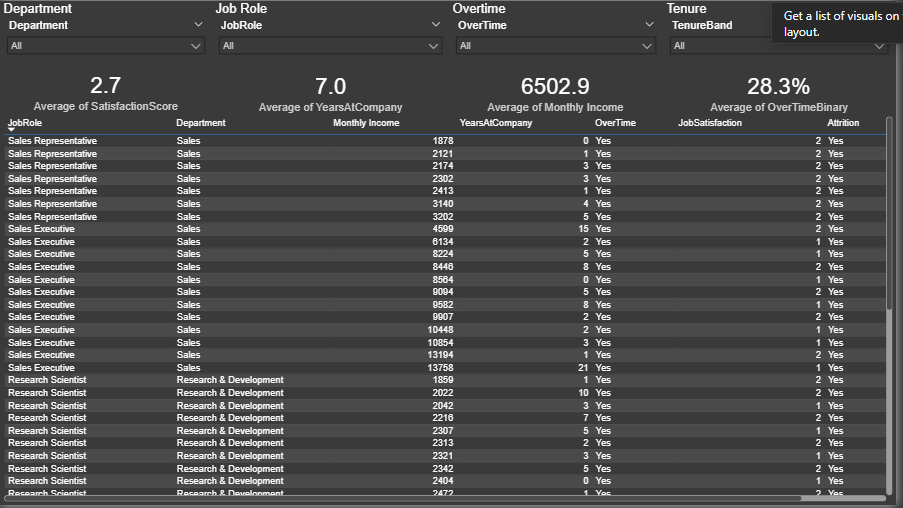
Above the healthy 10% industry benchmark — meaning the organization is losing employees faster than it should be.
Highest of any job role — nearly 4 in 10 Sales Representatives leave. Combined with low average income ($2,626/month), compensation is a key driver.
The highest-risk window. Employees in their first 2 years are far more likely to leave — pointing to onboarding and early engagement gaps.
Employees working overtime are roughly 3× more likely to leave than those who don't — work-life balance is a critical retention lever.
Employees earning under $3,000/month have a 26% attrition rate — the highest of any salary band. Compensation directly impacts retention.
A 7-point gap between departments suggests culture, management style, and compensation structures vary significantly across the organization.
This project gave me hands-on experience with the full analytics workflow — from raw CSV to boardroom-ready dashboard. The most valuable lesson was that feature engineering matters more than the model — creating TenureBand, SalaryBand, and SatisfactionScore transformed a flat dataset into something with real analytical depth.
On the SQL side, writing the high-risk employee identification query (Query 11) taught me how to combine multiple filters to produce actionable output — not just descriptive stats, but a list HR can act on immediately.
Power BI's slicer interactivity was the biggest unlock — being able to filter the entire Risk Profile page by department and see KPIs update in real time is the kind of thing that genuinely impresses stakeholders.
Excel → SQL → Power BI pipeline. Executive-level sales dashboard with regional breakdowns and time-series trends.